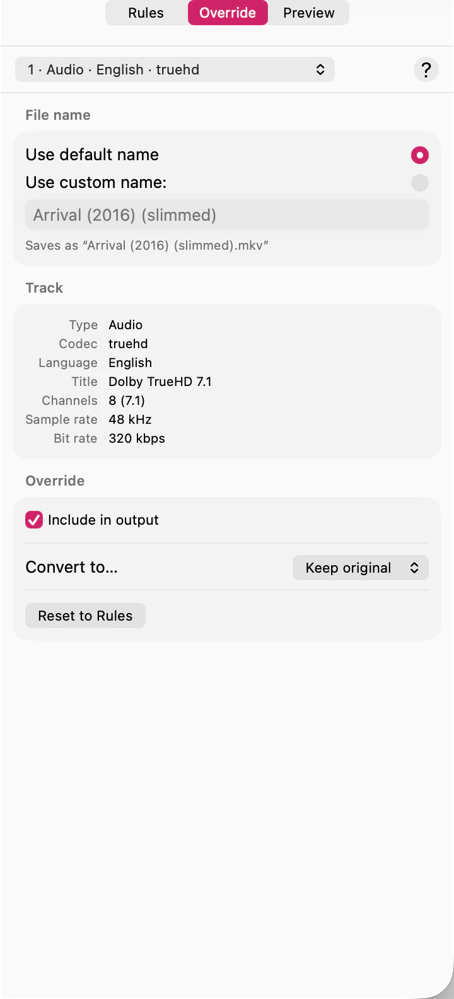

The keep rules apply to the whole queue. When one file needs different treatment — a mislabelled track, a documentary where you do want the commentary — you can change that file alone.

The track menu lists every track in the file. Dimmed entries are the ones being dropped; the rest are being kept. Choose a track to see what will happen to it and why.
To read the whole file at once instead of a track at a time, see Read the whole plan for one file. That’s the faster way to check your rules are doing what you meant before you commit a whole queue to them.
Pick a track, then choose what should happen to it — keep it, drop it, or convert it to a particular codec.
One thing to know before you do. Changing a single track promotes the whole file to a per-file plan. Every other track is frozen exactly as the rules had it at that moment, and that file stops following the queue’s rules from then on. Change the rules afterwards and this file won’t follow along.
That’s usually what you want — you singled the file out deliberately — but it does mean an override you set early and forgot about will quietly ignore later rule changes.
Click Reset to Rules. The file drops its own plan and follows the queue’s rules again, including anything you’ve changed since. The button only appears while a file actually has an override, so it doubles as the way to tell whether one is set.
The same tab sets an output name for this file alone, overriding the queue’s naming format. See Name the files SubTrack writes.
If you re-scan a file (Queue ▸ Re-scan Selected) its tracks are read again from disk. An override that referred to a track that’s no longer there can’t be honoured, so check the plan after replacing a source file.